library(ggplot2)
library(tidyr)
library(dplyr)
library(stevedata)
library(readr)
library(viridis)Lab 3 | Fundamentals of Visual Encoding
ST 437 Data Visualization
Getting Started
First, ensure you have the necessary packages installed and loaded. We will use the ggplot2, tidyr, dplyr, and stevedata packages for our examples.
Downloading R-packages
Use install.packages('Name of Package') to install an R package. You likely do not have the stevedata package installed, so you’ll need to install it in the console before proceeding.
Before moving on to the remainder of this activity, try rendering the document to both html and pdf. It’s generally a good idea to render your document periodically so that if there’s an issue, you can spot it more easily.
Part 1: Exploring ggplot2
The `facebook` dataset is about the performance metrics of a company’s posts on Facebook. Twelve posts’ metrics are included from the company’s page in this data. We have called it facebook_data.csv.
- Source: S. Moro, P. Rita and B. Vala. “Predicting social media performance metrics and evaluation of the impact on brand building: A data mining approach”. Journal of Business Research
facebook <- read_csv("facebook_data.csv")Use the rename() and select() functions to rename and keep only relevant columns for this activity. In the original dataset, there are columns named with spaces in them. Working with these type of columns can be tricky and messy. Additionally, in the original dataset, some column names were capitalized and some were not. The following chunk creates a standard naming convention for all the columns we’re interested in.
facebook <- facebook |>
rename(month = `Post Month`,
weekday = `Post Weekday`,
hour = `Post Hour`,
total_interactions = `Total Interactions`,
paid = Paid,
type = Type) |>
select(type, month, weekday,
hour, paid, comment,
like, share, total_interactions)Aesthetic mappings
Start by creating a scatterplot that displays posts’ number of likes vs. number of shares.
Consider: what information from the dataset is being mapped to visual channels in the following plot?
ggplot(data = facebook, mapping = aes(x = like, y = share)) +
geom_point()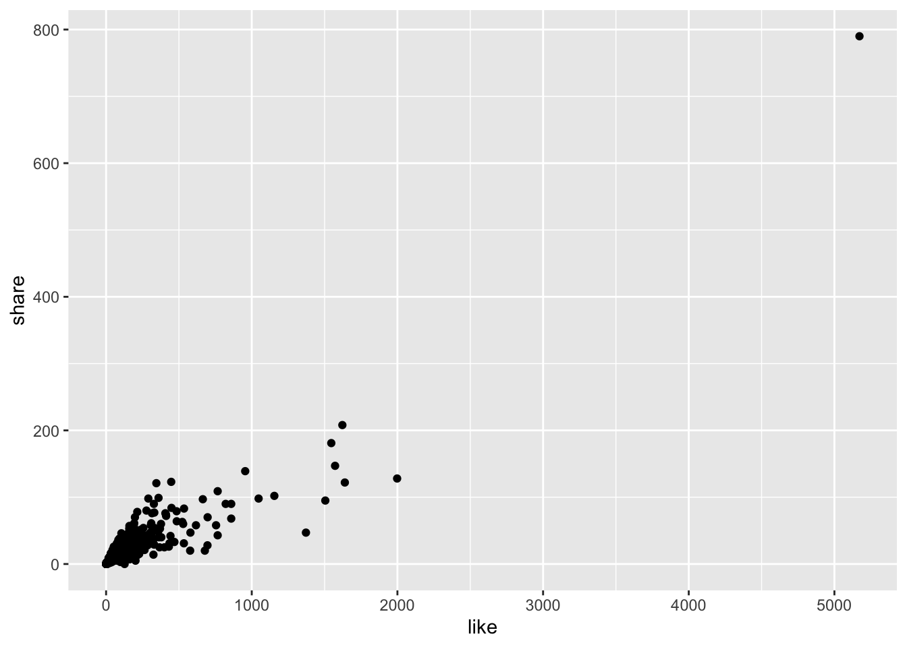
There is one large outlier with regard to both likes and shares. For the remainder of this activity, we’ll work only with posts where the number of likes was less than 3000.
facebook_subset <- facebook |>
filter(like < 3000)The following chunks use the dataset (with outlier removed) to again display the relationship between the number of likes vs. shares on posts. In each plot created below, the type of post has been mapped to an aesthetic.
Consider: Which aesthetic mapping is the most preattentative? Feel free to play around with other options. You can see more aesthetic options in the geom_point help documentation.
ggplot(data = facebook_subset,
mapping = aes(x = like, y = share)) +
geom_point(aes(shape = type))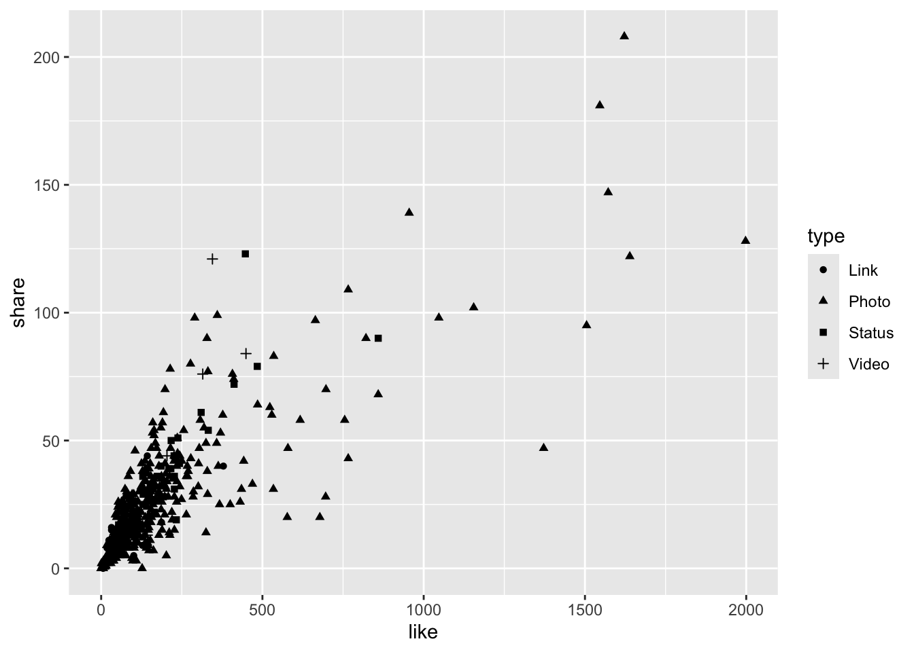
ggplot(data = facebook_subset,
mapping = aes(x = like, y = share)) +
geom_point(aes(size = type))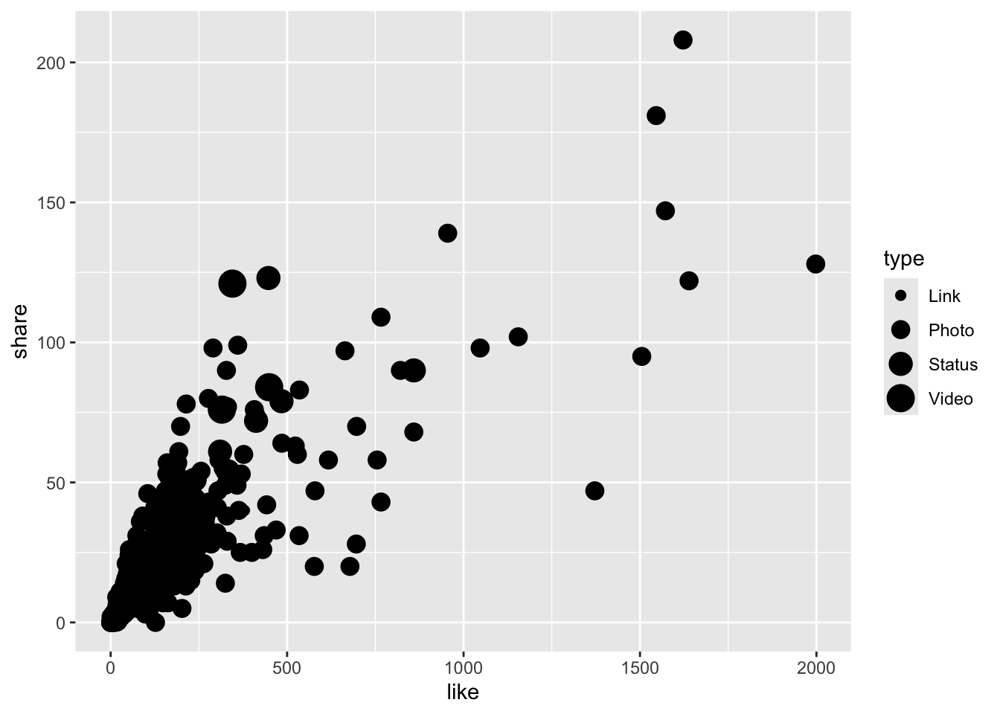
ggplot(data = facebook_subset,
mapping = aes(x = like, y = share)) +
geom_point(aes(color = type))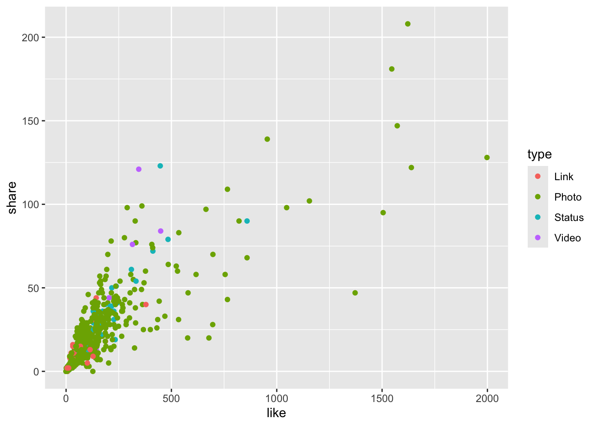
In the plot above, we mapped type to the color aesthetic. Color can also be supplied as a fixed or static aesthetic like in the plot below.
ggplot(data = facebook_subset,
mapping = aes(x = like, y = share)) +
geom_point(color = "#D73F09")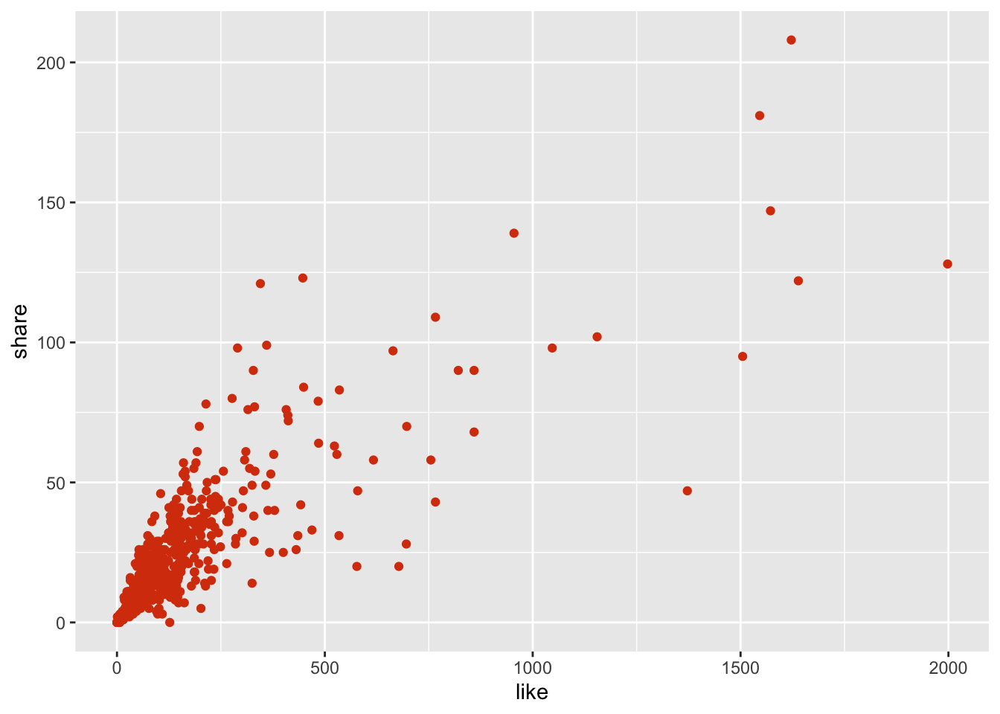
Consider: In the plot below, why aren’t the point displayed in blue?
ggplot(data = facebook_subset,
mapping = aes(x = like, y = share)) +
geom_point(aes(color = "blue"))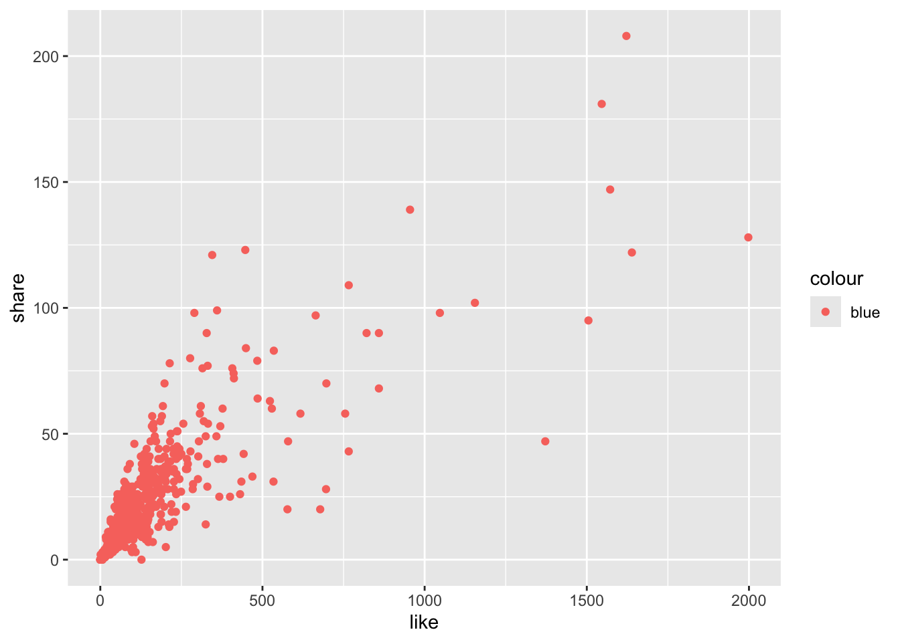
Facets
Even when we map discrete information onto aesthetics in our visualization, sometimes it can still be tricky to parse apart different levels of a category. Let’s recreate the likes vs. shares plot where type is mapped to color.
ggplot(data = facebook_subset,
mapping = aes(x = like, y = share)) +
geom_point(aes(color = type))
Because there are so many posts that involve photos, it’s difficult to say much about the relationship between likes and shares for the other post types.
One alternative option is to use facets.
To facet a plot by a single variable, we can add a facet_wrap() layer. The first argument of facet_wrap() should be a formula, which you create with ~ followed by a variable name.
ggplot(data = facebook_subset,
mapping = aes(x = like, y = share)) +
geom_point() +
facet_wrap(~ type)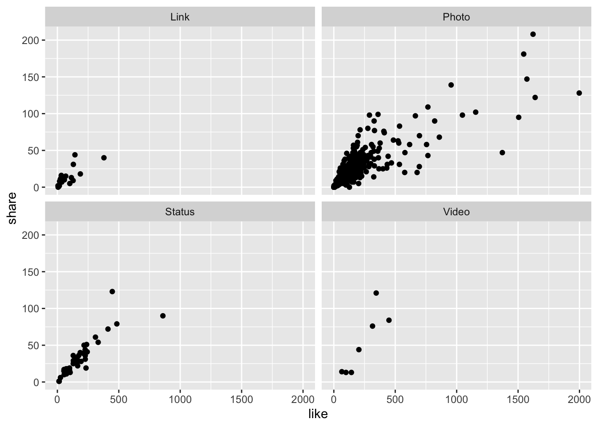
If you have multiple categorical variables you want to facet by, you can facet your plot on the combination of two variables. To do so, add facet_grid() to your plot call. The first argument of facet_grid() is also a formula. This time the formula should contain two variable names separated by a ~. See the facet_grid() help documentation for an example.
Geometric Objects
Consider: how are these two plots similar? How are they different?
ggplot(data = facebook_subset,
mapping = aes(x = like, y = share)) +
geom_point()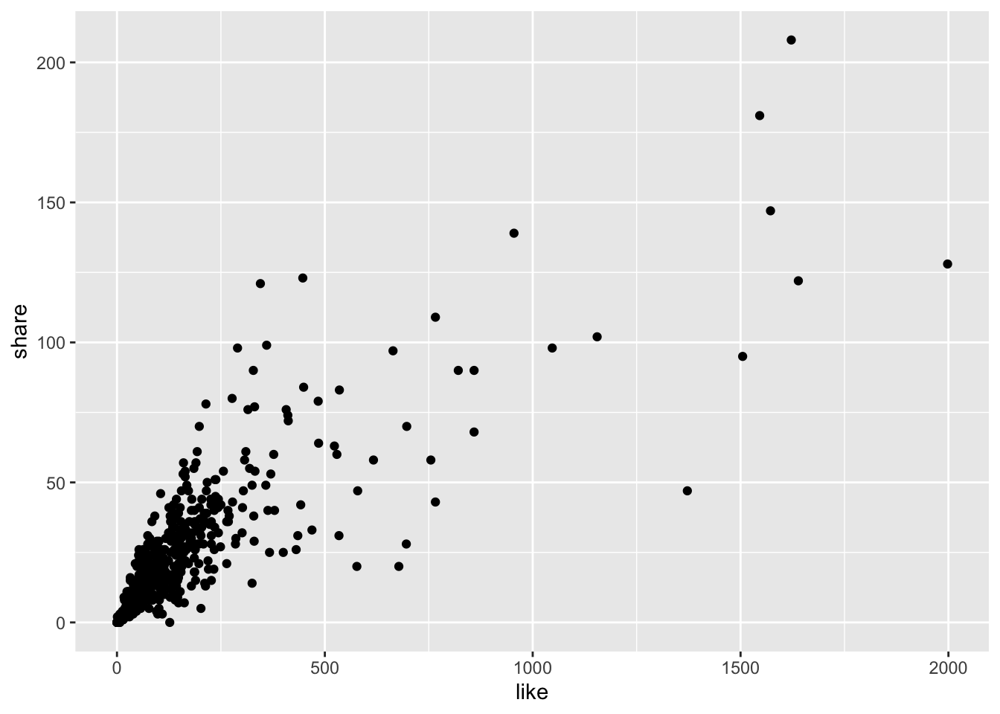
ggplot(data = facebook_subset,
mapping = aes(x = like, y = share)) +
geom_smooth()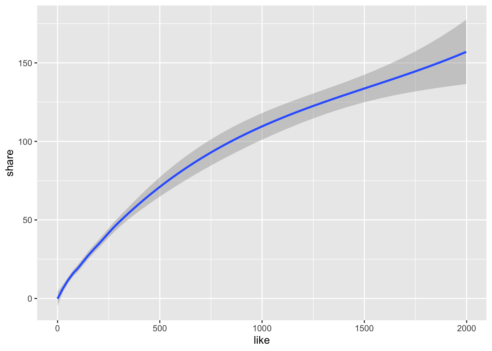
The only piece of code that differed in creating the two plots above was the geometric object or geom used. The choice of geom plays an important role!
We’ve already seen a number of geom options available in this course, including geom_line, geom_smooth, geom_point, geom_bar, and many more. Not all geoms will work with all types of data.
If we want to display the counts of a categorical variable, such as the type of posts, we might use geom_bar().
ggplot(data = facebook_subset,
mapping = aes(x = type)) +
geom_bar()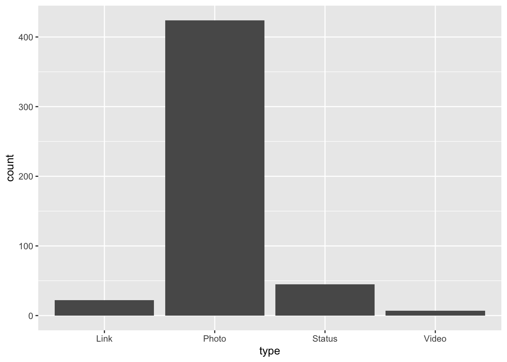
Let’s add some color, particularly colorblind friendly colors using the viridis package.
ggplot(data = facebook_subset,
mapping = aes(x = type)) +
geom_bar(aes(fill = type)) +
scale_fill_viridis(discrete=TRUE, guide = "none")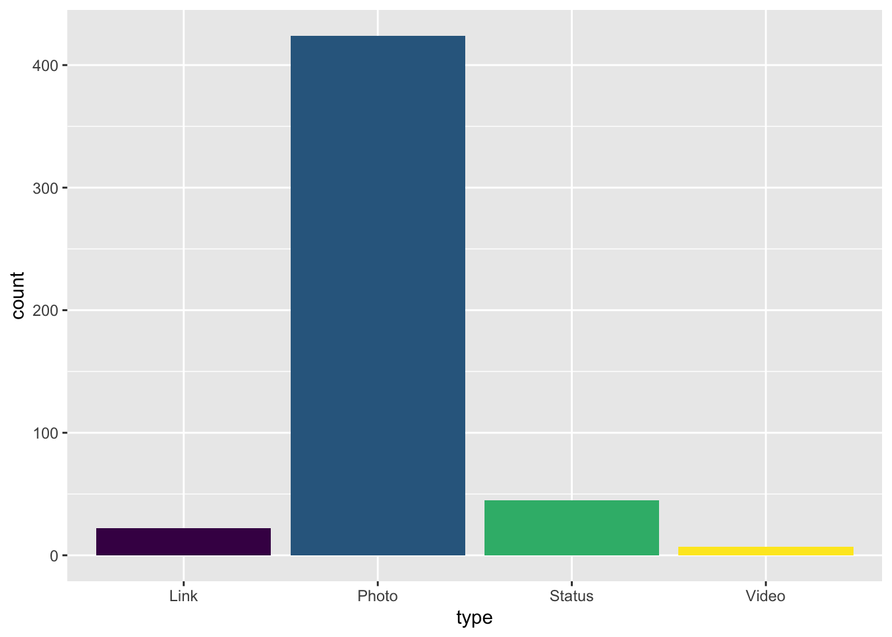
Part 2: Create an Alternative Plot
First, recreate the original plot
At the end of class, you were presented with a plot intended to suggest that Washington has a higer percentage of college graduates than nearby by states. The code chunk below will recreate that plot.
turnout <- election_turnout |>
mutate(per_no_hs = 100 - perhsed,
per_hs = perhsed - percoled) |>
dplyr::select(state, per_no_hs, per_hs, percoled) |>
rename(No_HS = per_no_hs,
HS_only = per_hs,
College = percoled)
west_states <- c("Oregon", "Alaska", "California", "Washington", "Idaho", "Nevada")
turnout_west <- filter(turnout, state %in% west_states)
west <- turnout_west |>
pivot_longer(c(No_HS, HS_only, College),
names_to = "Edu", values_to = "Percent")
ggplot(west) +
geom_bar(aes(x = "", y = Percent, fill = Edu),
stat = "identity", width = 1) +
facet_wrap(~ state) +
coord_polar(theta = "y") +
theme_minimal(18) +
xlab("") + ylab("") +
theme(axis.text = element_blank()) +
scale_fill_brewer(palette = "Blues") +
labs(title = "Washington has a higher percentage of college \ngraduates than nearby states") 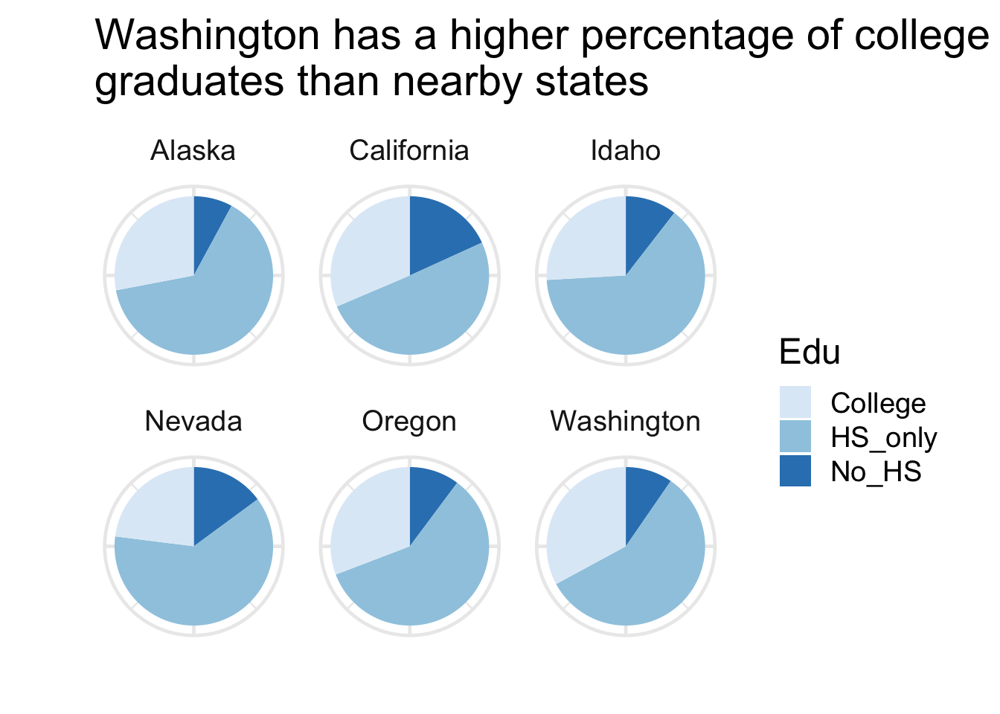
Now, create an alternative plot
Using your sketch(es) of an alternative to this plot that eases the perceptual task(s) of the viewer, implement it in ggplot2.
# Your code goes here...Answer the following
Provide a brief description of the improvements you made and why. Make sure you mention the perceptual tasks required in your alternate plot and compare them to those in the original.
Submit your work
You’ll need to submit your completed and rendered document to Canvas.
Please ensure you have executable code in all of the chunks labeled # Your code goes here... and have written answers to the two questions stated in the Answer the following section.
In the YAML of this file, change format to pdf. Then render the document. Submit both your .qmd and PDF files to the Foundations of Visual Encoding Lab Activity on Canvas.